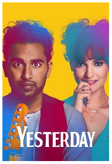

A Bad Review of Yesterday (2019)
Cass Python, 2019-08-25Perhaps one of Britain's biggest exports of the 20th century was her music and the many bands that came along with that, from rather clean bands from The Shadows to criminally over-looked artists such as Dusty Springfield .  Indeed, if you are a firm believer in the concept of the cultural phenomenon that was the British Invasion of the 1960's, then you will no doubt at all know about The Beatles, Hell, if you have ever owned a radio set, you would have heard their songs countless times. The Beatles aren't a band that will be forgotten any time soon.
That's why it is an interesting concept to wonder what would happen if they never existed, what would the world be like today? Well, as it happens, it would have a fair bit of comparisons to ours. Yesterday was directed by Danny Boyle (known for Trainspotting, 28 Days Later, Slumdog Millionaire, and 127 Hours) and written by Richard Curtis (known for Four Weddings and a Funeral, along with co-writing British classics like Blackadder, Mr. Bean, and The Vicar of Dibley).
The movie, while fun and entertaining, overall didn't have all that much of an overarching threat. For example, in the Star Wars movies, Luke Skywalker needs to overpower the evil that is Darth Vader, but in Yesterday , the only real threat is more of a concept that the real Beatles, Paul and Ringo, will appear and destroy the world of Jack Malik (Himesh Patel of EastEnders fame), who got famous for technically stealing Beatles' songs from memory, after he got hit by a bus, went into hospital, waking up to realise that he was the only person to know who The Beatles were. Not the best or even strongest of plots ever, but the movie does get away with its tail between its legs, just for how likeable its characters were, and the appearance of fun music.
While not normally not an actor, Ed Sheeran's presence was enjoying to see. At times his acting skills were not rather the best, but saying that, his skills in the field of acting did see an improvement later off in the movie. When Mr. Sheeran and Jack first met in the kitchen of Jack's parents, Sheeran did have an almost stiffness to them, but this was soon fixed while he was in the studio. Ed Sheeran in Yesterday did have an ore of charm to him and he did seem like a genuinely nice person, of cause, he could be a complete bastard outside of the movies, but that doesn't seem likely.
The parts of the movie that show the making of music, feel like they are trying to tell the viewer of the many downsides to the music world; even the process of making an album cover is heavily thought about in a board meeting with large numbers of yes men. Even simple things such as trying to make one of the albums called The White Album are changed in fear of implying that there was a race motivation behind it. A part of the movie even had Ed Sheeran and Jack's producer (as played by Kate McKinnon) inject their own ideas into the making of Hay Jude, suggesting to change the name from "Jude" to "Dude", as the name Jude is old and less hip. The movie seemed to like pushing the idea that the music industry as a whole is full of yes men and bastardisation of the original artist's ideas.
All of the people, besides Ed Sheeran, in the music industry were portrayed as utter bellends with no spine. The manager (Kate McKinnon) for all intents might as well have been played by a secret love-child of Hitler, Fred West, and my old PE teacher, there was even a part very near the end of the movie where she, quite literally, screams "Stop in the name of money" - not very subtle, on reflection of the movie, I'm surprised that there wasn't a part of the film where the manager was seen drowning babies.
 is seen by him while people from the press are talking photos of him.")
On reflection, one thing that I liked was the comparison between the United States and the United Kingdom, where the US is all sunny, while the UK is wet and damp; quite funny.
The movie was overall enjoyable and quite the fun to watch, plus, as stated, it has a number of music numbers that were nice to hear, even better was that they were covers, so Jack would add his own way of singing it, just a shame that the soundtrack on YouTube has background noise to it (like the character talking, even on the official audio), I did see a record copy of the soundtrack at the UK-based music and film retailer, HMV for sale, but it was around £40 - a bit too much, don't you think?
The ending was a bit... meh at best, but I am glad that the reasoning why Jack is the only one to remember The Beatles is never explained at all so it leaves us - the viewers - wondering why. I personally think that Jack (and the other two people who remember the band) were sent to a parallel universe where the band (along with cigarettes, Coca-Cola™, and Harry Potter™) were never invented, but of cause, you're free to have your own idea about how it happened.
Good movie; worth a watch.